Proměňte průměrný produkt nebo službu
do takové, kterou zákazníci milují 💙
Která oblast vás nejvíc pálí?
Pojďme problematické společně zlepšit
Zbavte se překážek, kvůli kterým přicházíte o zákazníky
Podpořte růst platících zákazníků
Mějte svůj produkt nebo službu aktuální, jednoduché a atraktivní
Zjednodušujte, inovujte a testujte nové
Snižte počet zbytečných dotazů na zákaznickou podporu
Udržte si nízké provozní náklady
Naučte se konkurovat skvělou zákaznickou zkušeností
Konkurenční výhoda, co se špatně kopíruje
Usnadněte svému týmu život vhodnými nástroji a postupy
Získejte čas na řešení důležitějších věcí
Na čem jsem pracoval?
Návrh zkušebního provozu jízd skrz platný kupon MHD
Příprava strategie a zadání pro aplikaci, zákaznickou podporu a komunikaci akce, s přihlédnutím k technickým omezením.
Dohle na konzistenci v rámci realizace.
Zlepšení oslovování nových uchazečů o studium
Zmapování potřeb uchazečů, lidí z univerzity a nejčastějších problémů. Návrh struktury nového webu s důrazem na pomoc ohledně podávání přihlášky.
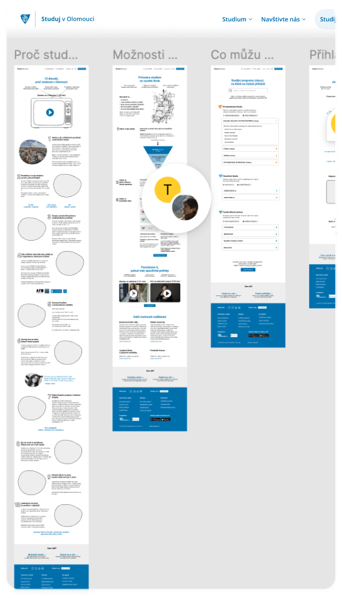Rozšiřování firemního webu bez čekání na vývojáře
Řešení, jak přesunout existující webu na no-code nástroj, který umožní týmu po zaškolení změny a vytváření nových stránek z předem navržených sekcí.
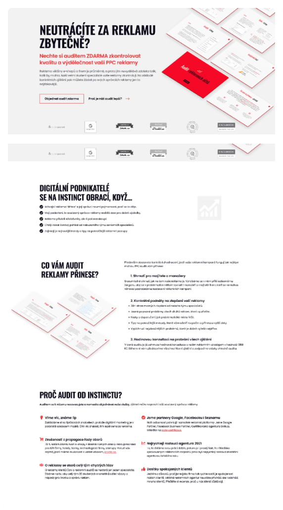Zrychlení registrace do služby: Půjčení kola za 30 sekund
Zmapování překážek a zbytečných kroků, které prodlužují dobu registrace. Zkrácení ze 2 minut při zachování edukace zákazníka a získání všeho potřebného.
Formování služby terapie po telefonu
Konzultace nabízení terapie po telefonu během pandemie lidem, kteří s ní nemají zkušenost. Mapování potřeb, obav a návrh stránky, která vše vysvětluje.
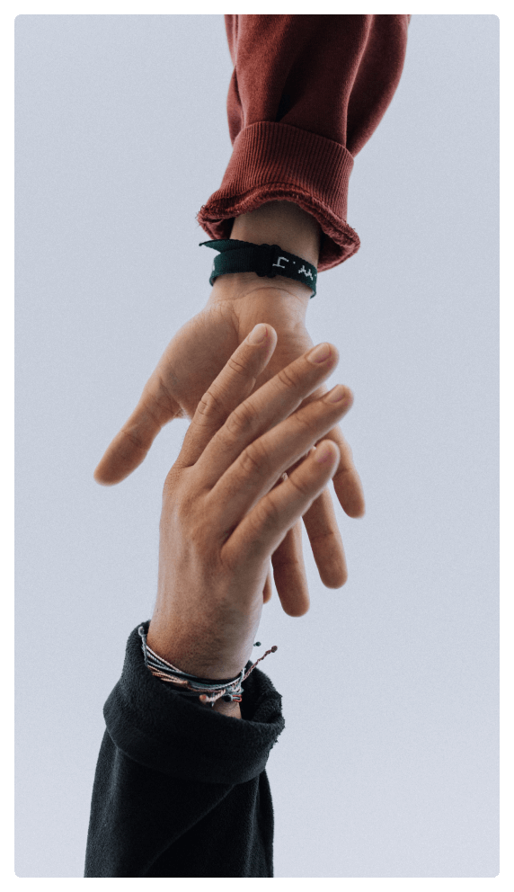Zlepšení interních nástrojů pro řešení oprav a závozů kol
Zjišťování aktuálního fungování a potřeb. Návrh zrychlení řady procesů a úkonů. Testování řešení s členy týmu v několika městech, než došlo na programování.
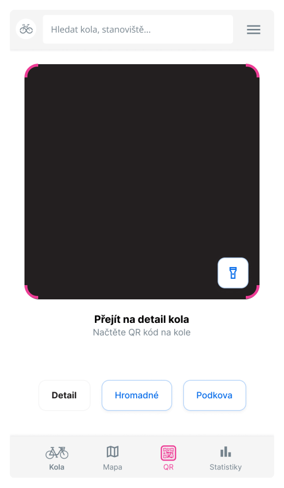Řešení přihlašování na školení, rychle na ověření zájmu
Zjišťování potřeb organizátorky školení, lektora a marketingového týmu. Příprava zadání a testovací verze přihlašování na no-code nástroji bez programování.
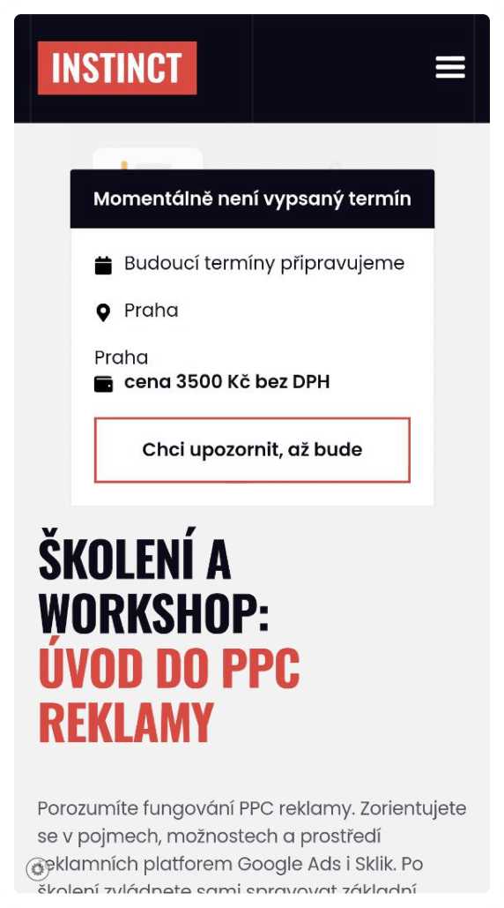Managment změny parkování do konkrétních míst
Strategie, jak celou věc vysvětlit a provést. Mapování možných problémů se zákaznickou podporou, návrh změn v aplikaci, na webu a v provozním systému.
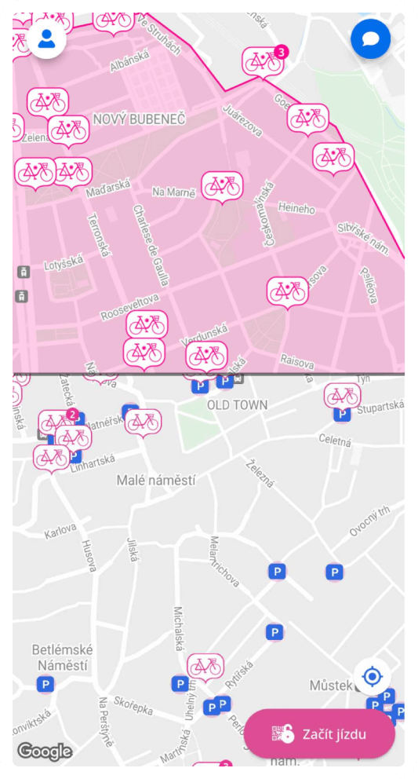Návrh sezónního subscription s možností pozastavení
Hledání řešení, jak mít subscription jen na 8-9 měsíců během roku. Věrnostní program vede během zimy zákazníka k dočasnému pozastavení místo ke zrušení.
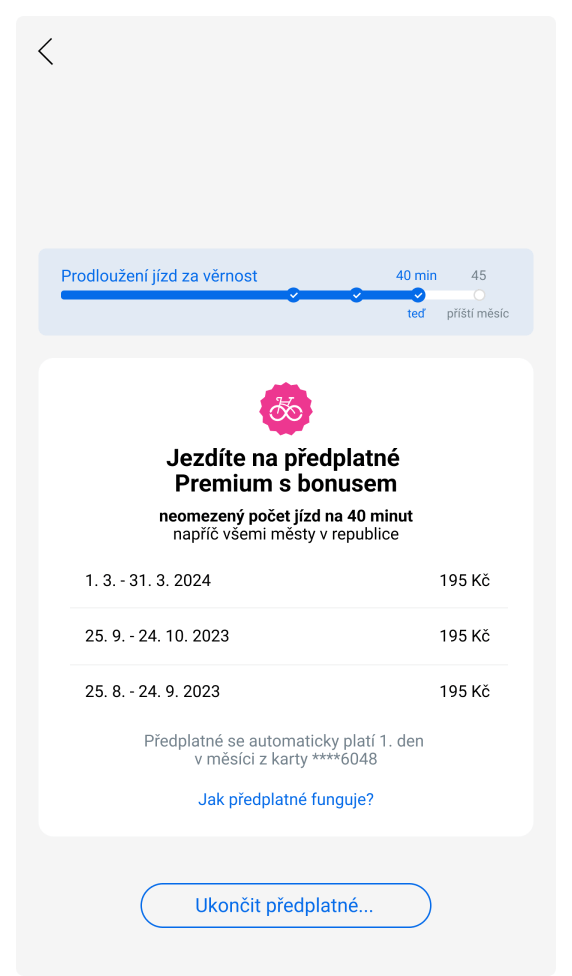Příprava zadání a začlenění audio průvodce do muzea
Definice stěžejní funkcionality a potřeb zaměstanců: Propagace u vstupu, označení v expozici, process předávání mincí za úspěšně dokončený kvíz.
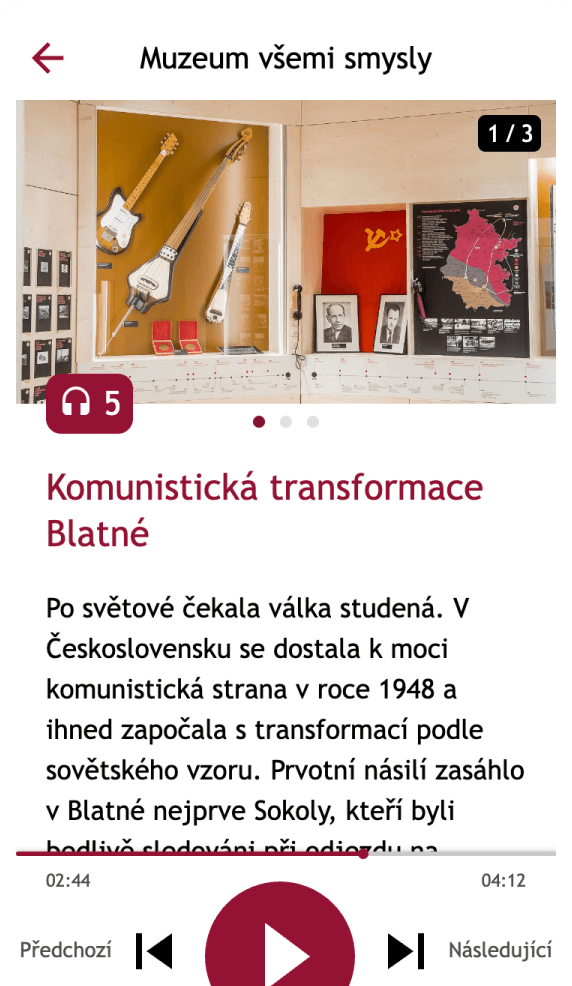Mapování rozdílů pro start služby na estonském trhu
Pojmenování rozdílů mezi ČR, SR a hledání způsobů, jak službu pozicovat a upravit pro Estonsko podle místní konkurence. Návrh možných změn appky, webu, ...
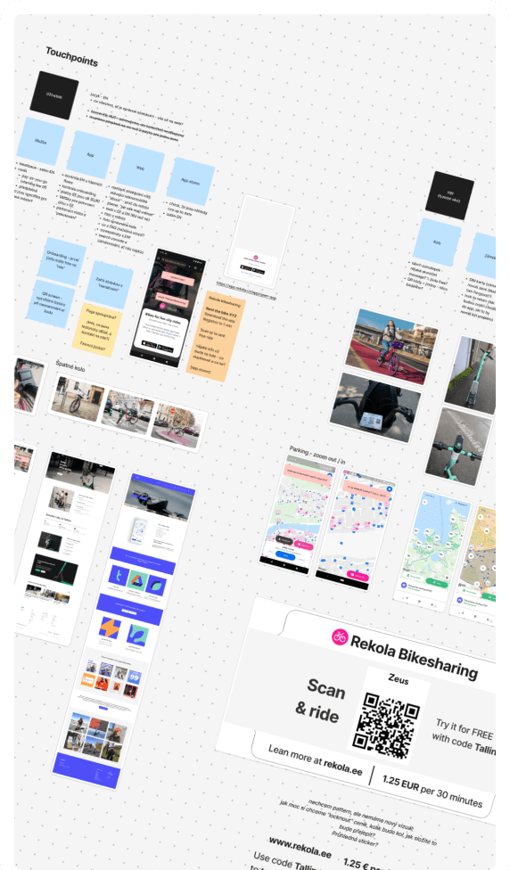Příprava zadání pro novou aplikaci a administraci závodu
Workshop mapující potřeby závodníků a organizátorů, a limitací technologie. Konzultace zadání - fixní čas a rozpočet, variabilní rozsah (prioritizace stěžějního).
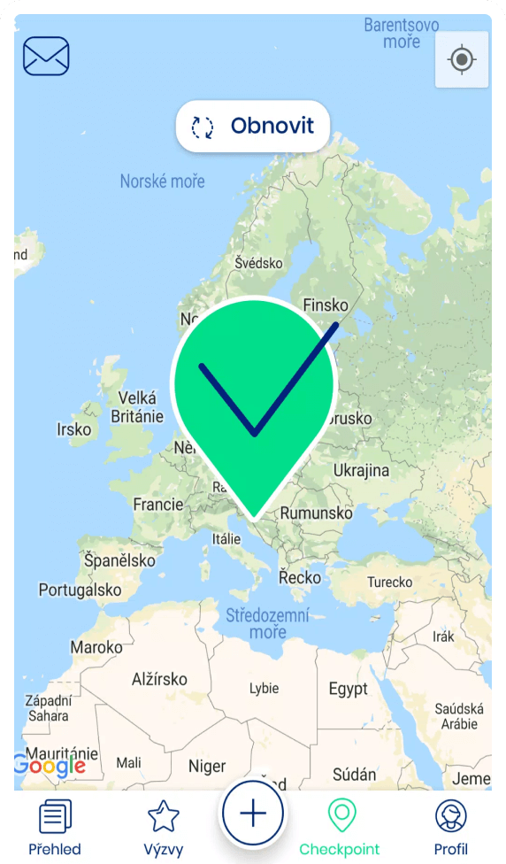Hledání dalšího využití evidence deskových her
Přilákání nových zákazníků z vyhledávání (SEO), zlepšení zážitku pro štamgasty hledající vhodné hry, a přehled dostupnosti her pro zaměstnance.
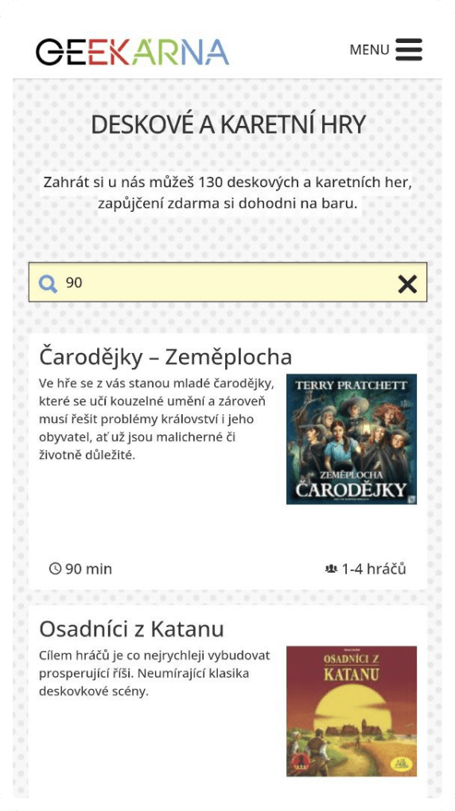Jak to probíhá?
Ujasníme si představy
Určíme potřeby, limitace, cíle
Najdeme pro vás vhodné řešení

Jak můžeme spolupracovat?
Konzultace
Využijte 15 let mých zkušeností:
- Zhodnotíme současný stav
- Nápady, jak problematické řešit
- Inspirace, tipy na osvědčené postupy, zdroje a nástroje
Na vaší straně
Zlepšení specifické oblasti:
- Zmapujeme stávající situaci
- Určíme ideální další kroky
- Změnu vyřešíme interně s mojí pomocí nebo se specialistou
Jak spolupráci vnímají klienti?
Naučil jsi nás, že design je daleko víc, než jen sedět v kanceláři, kreslit obélníky a řešit grafiku.
Za nejvetsi Markovo plus povazuju, ze se na projekt diva jako na celek a v tomto kontextu premysli i o jeho jednotlivych castech. To, ze jen "slepe" neplni dany ukol se pak vzdy pozitivne promita do vysledku jeho prace.
O mně 👋
- Nemám rád zbytečně složité a otravné. Proto věnuju čas a energii tomu, aby věci fungovaly jednoduše a bez větší námahy. Hledám skutečnou příčinu problémů, ne jen jejich příznaky. A snažím se, aby technologie nepřekážela a v ideálním případě byla neviditelná.
- Za posledních 15 let jsem pracoval v řadě rolí - mám velký přehled o tom, jak lidé přemýšlejí a se chovají, o marketingu a zákaznické podpoře, ale i o technické stránce. Ovládám „programátorštinu“ a zvládnu vám přeložit složitější koncepty a možnosti.
- Rád cestuju a mám tak šanci vidět, jak produkty a služby vypadají různě po světě. Čím se dá inspirovat, a co rozhodně nedělat.
- Zajímám se o mobilitu, veřejný prostor, sdílenou ekonomiku, udržitelnost, duševní zdraví, pomalé cestování, jazyky, komunikaci a vzdělávání obecně.
- Líbí se mi přístup k designu u 37 signals/Basecamp, Too Good to Go, HSL/HRT, Swapfiets, Airbnb, Tesla Charging, Framer, Kit a dalších.
- Když nepracuju, najdete mě v kavárně s knížkou, v sauně, na toulkách s foťákem u moře, na horách nebo ve městě, které právě přebývám.